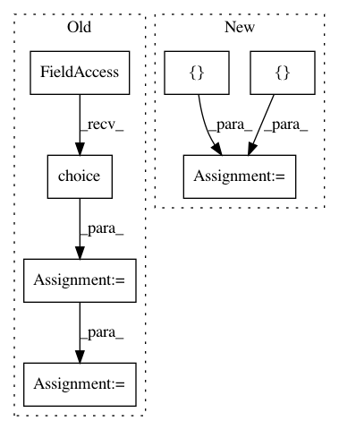

5dd2b15292dbe0b8d1185a9e6dcbb588d38c9cfe,flow/envs/base_env.py,Env,setup_initial_state,#Env#,210
Before Change
// vehicles visually on sumo"s gui
self.colors = {}
key_index = 1
color_choice = np.random.choice(len(COLORS))
for i in range(self.vehicles.num_types):
self.colors[self.vehicles.types[i][0]] = \
COLORS[(color_choice + key_index) % len(COLORS)]
key_index += 1
// add missing traffic lights in the list of traffic light ids
tls_ids = self.traci_connection.trafficlights.getIDList()
After Change
// collect subscription information from sumo
vehicle_obs = self.traci_connection.vehicle.getSubscriptionResults()
tls_obs = self.traci_connection.trafficlights.getSubscriptionResults()
id_lists = {tc.VAR_DEPARTED_VEHICLES_IDS: [],
tc.VAR_TELEPORT_STARTING_VEHICLES_IDS: [],
tc.VAR_ARRIVED_VEHICLES_IDS: []}
// store new observations in the vehicles and traffic lights class
self.vehicles.update(vehicle_obs, id_lists, self)
self.traffic_lights.update(tls_obs)
In pattern: SUPERPATTERN
Frequency: 3
Non-data size: 7
Instances
Project Name: flow-project/flow
Commit Name: 5dd2b15292dbe0b8d1185a9e6dcbb588d38c9cfe
Time: 2018-02-01
Author: akreidieh@gmail.com
File Name: flow/envs/base_env.py
Class Name: Env
Method Name: setup_initial_state
Project Name: CyberReboot/NetworkML
Commit Name: a9e42a7f1d0ea64be0371a6f7aff5039b5a48f4f
Time: 2017-11-15
Author: CStephenson970@gmail.com
File Name: NodeClassifier/iterator.py
Class Name: BatchIterator
Method Name: gen_data
Project Name: broadinstitute/keras-rcnn
Commit Name: ebae4ed91a657b1eac389a6d380c165a295cd822
Time: 2018-01-30
Author: allen.goodman@icloud.com
File Name: tests/layers/losses/test_rcnn.py
Class Name: TestRCNN
Method Name: test_call